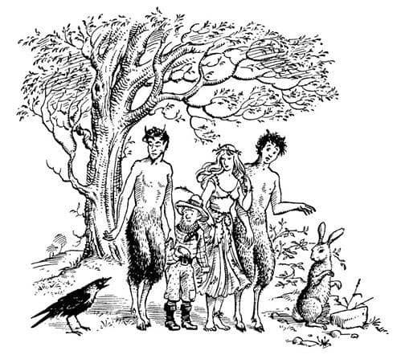
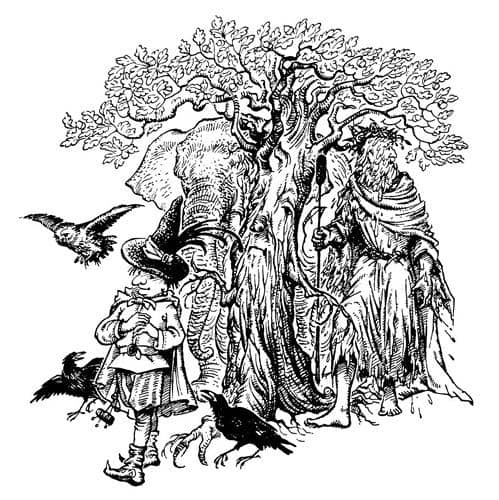
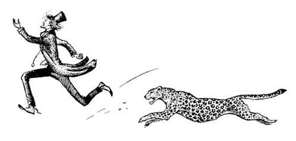
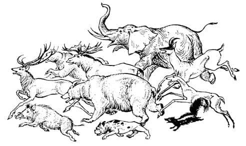

İlk Şaka ve Diğer Sorunlar
Konuşan elbette Aslan’dı. Çocuklar uzun süreden beri onun konuşabileceğine inanıyorlardı ama söylediklerinin hoşluğu karşısında müthiş bir şaşkınlığa düşmüşlerdi.
Ağaçların arasından vahşi insanlar çıktı, ormanın tanrıları ve tanrıçaları; faunlar*, cüceler ve satirler**. Nehirden, su perileriyle birlikte Nehir Tanrısı yükseldi. Ve tüm bunlar ve tüm hayvanlar ve kuşlar, kalın ya da ince, alçak ya da yüksek, değişik sesleriyle cevapladılar:
“Yaşasın Aslan. Seni duyduk ve itaat ediyoruz. Uyandık. Seviyoruz. Düşünüyoruz. Konuşuyoruz. Biliyoruz.”
“Fakat lütfen, biz pek bir şey bilmiyoruz henüz” dedi horultulu ve burundan gelen bir ses. Bu gerçekten çocukları yerinden sıçrattı, çünkü konuşan Arabacı’nın atıydı.
“Sevimli ihtiyar Çilek” dedi Polly. “Konuşan Hayvan olarak seçilenlerden biri olmasına çok sevindim.” O anda çocukların arkasında durmakta olan Arabacı “Hey güzel Tanrım! Gerçi her zaman bu atın çok akıllı olduğunu söylemişimdir ya” dedi.
“Yaratıklar, sizlere hayat veriyorum.” dedi Aslan güçlü ve mutlu bir sesle. “Bu Narnia ülkesini sonsuza kadar size veriyorum. Size ormanları, meyveleri ve nehirleri veriyorum. Yıldızları ve kendimi veriyorum. Seçmediğim, Konuşmayan Hayvanlar da sizindir. Onlara iyi davranın ve bağrınıza basın ama onların yolundan gitmeyin ki Konuşan Hayvan olmanız bir gün sona ermesin. Çünkü siz onların soyundan geldiniz ve onlara dönebilirsiniz. Bunu yapmayın.”
“Hayır, Aslan! Dönmeyeceğiz, dönmeyeceğiz” dedi hepsi. Fakat hepsinin sustuğu bir anda küçük şakacı bir karga, yüksek bir sesle “Hiç korkun olmasın” dedi. Böylece karganın sözleri, bu ölüm sessizliğinde çok net bir şekilde duyulmuştu; belki siz bunun – diyelim bir partide – ne kadar kötü olabileceğini biliyorsunuzdur. Karga öylesine utanmıştı ki uyurken yaptığı gibi, başını kanadının altına sakladı. Ve diğer bütün hayvanlar, onların gülme biçimleri olan ve bizim dünyamızda hiç işitilmemiş, değişik ve tuhaf sesler çıkarmaya başladılar. Başlangıçta utangaçtılar ama Aslan dedi ki:
“Yaratıklar, gülün ve korkmayın. Artık dilsiz ve akılsız olmadığınıza göre sürekli ciddi olmanıza gerek yok. Çünkü adalet gibi, şakalar da ifade yoluyla gelir.”

Böylece bütün hayvanlar kendilerini koyuverdi. Öylesine bir şenlikti ki bu, karga bile yeniden cesaretini toplayıp, çeki atının başına, kulaklarının arasına tünedi ve kanatlarını çırparak dedi ki:
“Aslan, Aslan! İlk şakayı ben mi yaptım? İlk şakayı benim yaptığım bundan böyle herkese söylenecek mi?”
“Hayır küçük dostum” dedi Aslan. “Sen ilk şakayı yapmadın, kendin ilk şaka oldun.” O zaman herkes daha da çok güldü, fakat karga alınmamıştı ve o da yüksek sesle gülüyordu, ta ki at başını sallayınca, dengesini kaybedip düşene kadar. Ancak yere çarpmadan önce kanatlarını hatırladı (kanatları hâlâ yeni bir şeydi onun için).

“Ve şimdi” dedi Aslan, “Narnia kuruldu. Yapacağımız ilk şey güvenliğimizi düşünmek olmalı. Bazılarınızı meclisime çağıracağım. Buraya yanıma gelin, sen Baş Cüce ve sen Nehir Tanrısı, sen Meşe ve erkek Baykuş ve Kuzgunlar ikiniz birden, ve erkek Fil. Birlikte konuşmalıyız. Çünkü dünyamız kurulalı beş saat bile olmamasına karşın, şimdiden içimize bir şeytan girdi.”
Adları söylenen yaratıklar öne çıktı ve Aslan onlarla beraber doğuya doğru yöneldi. Diğerleri aralarında konuşmaya başladılar: “Dünyaya neyin girdiğini söyledi? – Bir şey Tan – Tan da ne? Hayır Tan demedi, Şan dedi – O da ne acaba?”
“Buraya bak” dedi Digory Polly’ye, “Onun – Aslan’ın – arkasından gitmeliyim. Onunla konuşmam gerek.”
“Konuşabileceğimizi sanıyor musun? Ben cesaret edemem.”
“Etmem gerek” dedi Digory. “Bu annemle ilgili. Onu iyi edecek şeyi verebilecek bir kişi varsa, o da Aslan.”
“Ben de seninle beraber geleceğim” dedi Arabacı. “Onun görünüşünü beğeniyorum. Diğer hayvanların da bize saldıracağını sanmıyorum. Ve yaşlı Çilek’le de birkaç laf etmek istiyorum.”
Böylece üçü birden – olabildiğince – cesaretle hayvanlar meclisine doğru yürümeye başladılar. Yaratıklar birbirleriyle konuşup tanışmakla o kadar meşguldüler ki, ne üç insanı çok yakınlarına gelinceye kadar fark ettiler, ne de epey ötede düğmeli çizmeleriyle titreyerek dikilen ve bağıran (zayıf bir sesle) Andrew Dayı’yı işittiler.
“Digory! Geri dön! Hemen geriye dön diyorum. Bir adım bile ileri gitmeni yasaklıyorum.”
Sonunda hayvanların arasına girdiklerinde hepsi konuşmayı bıraktı ve onlara baktı.
“Hey!” dedi erkek Kunduz sonunda, “Aslan’ın adına, bunlar da ne?”
“Lütfen” diye başladı Digory kısık bir sesle, fakat bir Tavşan, “Bunlar bir tür büyük marul, benim fikrim bu.” dedi.
“Hayır değiliz, gerçekten değiliz” dedi Polly telaşla. “Tadımız hiç de güzel değildir.”
“İşte!” dedi Köstebek. “Konuşabiliyorlar. Marulların konuştuğunu kim duymuş ki?”
“Belki de İkinci Şaka bunlar.” dedi karga imayla.
Yüzünü temizleyen bir Panter bir an yalanmayı bıraktı. “Eğer bunlar İkinci Şaka’ysa, hiç de birincisi kadar iyi değil. En azından ben gülünç bir yanlarını görmüyorum.” dedi. Sonra esneyerek temizliğine devam etti.
“Of, lütfen” dedi Digory. “Çok acelem var. Aslan’ı görmek istiyorum.” Bu süre boyunca Arabacı, Çilek’in bakışlarını yakalamaya çalışıyordu. Sonunda başardı. “Çilek, eski dostum” dedi. “Beni tanıyorsun. Orada durup beni tanımadığını söyleme.”
“Bu Şey neden bahsediyor, At?” dedi çeşitli sesler.
“Aaaa” dedi Çilek yavaşça. “Kesin olarak bilmiyorum, sanırım çoğunluğumuz pek bir şey bilmiyoruz henüz. Fakat daha önce bunun gibi bir şey gördüğümü hissediyorum. Aslan birkaç dakika önce hepimizi uyandırmadan önce başka bir yerde yaşadığımı – ya da başka bir şey olduğumu – sanıyorum. Her şey çok karmakarışık. Bir rüya gibi. Fakat rüyada bu üçüne benzeyen şeyler vardı.”
“Ne?” dedi Arabacı. “Beni tanımıyor musun? Kendini iyi hissetmediğin akşamlarda sana sıcak lapa getiren beni? Seni gerektiği gibi tımar eden beni? Soğukta duruyorsan seni örtmeyi hiç unutmayan beni? Bunu senden beklemezdim Çilek.”
“Hatırlamaya başlıyorum” dedi At, düşünceli bir şekilde. “Evet. Düşüneyim şimdi, düşüneyim. Evet, sen arkama çirkin, siyah bir şey bağlardın ve sonra koşmam için beni kırbaçlardın. Ne kadar hızlı koşarsam koşayım bu siyah şey hep tangır tungur arkamdan gelirdi.”
“Yaşamımızı kazanmak zorundaydık, biliyorsun!” dedi Arabacı. “Benimkini olduğu kadar seninkini de. Eğer iş ve kırbaç olmasaydı, ne dam, ne saman, ne lapa, ne de yulaf olurdu. Gücüm yettiği zaman sana yulaf yedirdiğimi kimse inkâr edemez.”
“Yulaf?” dedi at, kulaklarını dikerek. “Evet, bunun hakkında bir şeyler hatırlıyorum. Evet, gittikçe daha fazla hatırlıyorum. Sen her zaman arkada bir yerlerde otururdun ve ben o siyah şeyi ve seni çekerek önden koşardım. Bütün işi benim yaptığımı biliyorum.”
“Yazları, evet, haklısın” dedi Arabacı. “Senin işin sıcaktaydı ama benim oturağım serindeydi. Kıştan ne haber yaşlı oğlan, sen kendini sıcacık tutarken, benim ayaklarım arabanın tepesinde buz tutardı ve burnum rüzgâr tarafından koparılmış gibi acırdı ve ellerim o kadar uyuşurdu ki dizginleri zorlukla tutabilirdim.”
“Zor ve zalim bir ülkeydi” dedi Çilek. “Hiç ot yoktu. Hep taşlık.”
“Çok doğru dostum, çok doğru.” dedi Arabacı. “Zor bir dünyaydı o. Parke taşlarının atlar için iyi olmadığını her zaman söylemişimdir. Orası Londra’ydı. Ben de orayı senin sevdiğinden fazla sevmezdim. Sen bir taşra atıydın ve ben de bir taşra insanı. Memlekette, koroda şarkı söylerdim ben. Fakat bana uygun bir yaşam yoktu orada.”
“Of, lütfen lütfen” dedi Digory. “Gidebilir miyiz? Aslan gittikçe uzaklaşıyor. Ve ben onunla mutlaka konuşmak istiyorum.”
“Bana bak Çilek” dedi Arabacı. “Bu genç centilmenin kafasında Aslan’la konuşmak istediği bir şey var; farz et ki sırtına binmesine razı oldun (eminim buna çok memnun olacaktır) ve onu Aslan’ın olduğu yere götürdün. Ben ve küçük kız da sizi takip ederiz.”
“Binmek mi?” dedi Çilek. “Oh, şimdi hatırlıyorum. Bu, benim sırtıma oturması demek. Uzun zaman önce bunu yapan, sizin gibi iki ayaklı, küçük birini hatırlıyorum. Bana verdiği küçük, sert ve beyaz, küp şeklinde parçacıklar vardı. Tatları nefisti – of harika, ottan daha tatlı.”
“Hah, bu şeker olmalı” dedi Arabacı.
“Lütfen, Çilek” diye yalvardı Digory, “Binmeme izin ver ve beni Aslan’a götür.”
“Eh, bir zararı olmaz” dedi At. “Hele bir kereliğinden. Atla bakalım.”
“Güzelim Çilek” dedi Arabacı. “Haydi ufaklık, seni kaldırayım.” Az sonra Digory Çilek’in sırtındaydı ve oldukça da rahattı, çünkü daha önceleri kendi atına eğersiz binmişti.
“Haydi Çilek” dedi.
“Sanırım, o beyaz şeyden yoktur yanında tesadüfen, değil mi?” dedi at.
“Korkarım yok.” dedi Digory.
“Eh, yapılacak bir şey yok” dedi Çilek ve koşmaya başladı.
O anda, etrafı koklayıp, bakınmakta olan iri bir Buldog dedi ki:
“Bakın. Bu garip yaratıklardan bir tane daha var – orada, nehrin yanında, ağaçların altında.”
O zaman bütün hayvanlar, orman gülleri arasında hareketsiz dikilen ve fark edilmeyeceğini uman Andrew Dayı’ya baktılar.
“Haydi!” dedi birkaçı. “Gidip bakalım.” Böylece Çilek, Digory ile bir yöne doğru tırıs giderken (Polly ile Arabacı da onları yaya olarak takip ediyordu) yaratıkların birçoğu havlamalar, homurtular, hırıltılar ve ilgilerini gösteren değişik seslerle, Andrew Dayı’nın olduğu yöne doğru koşmaya başladılar.
Şimdi geriye dönüp, bütün bu olayların Andrew Dayı’nın bakış açısından nasıl göründüğünü açıklamalıyız. Yaşananlar, çocuklar ve Arabacı’da oluşan izlenimi bırakmamıştı onun üzerinde. Çünkü işittikleriniz ve duyduklarınız, nerede durduğunuza bağlı olduğu kadar, nasıl bir insan olduğunuza da bağlıdır.
Hayvanların ortaya çıktığı ilk andan itibaren Andrew Dayı yavaş yavaş çalılıklara doğru gerilemişti. Dikkatle onları seyretmekteydi elbette fakat onların ne yapacaklarıyla gerçekten ilgilendiğinden değil, saldırıp saldırmayacaklarını öğrenmek istediği için böyle davranıyordu. Cadı gibi onun da, müthiş bir pratik zekâsı vardı. Ancak Aslan’ın her tür hayvandan bir çift seçtiğini fark etmemişti. Bütün gördüğü, ya da gördüğünü düşündüğü şey, bir sürü tehlikeli ve vahşi hayvanın amaçsızca ortalıkta dolaştığıydı. Ve diğer hayvanların bu büyük Aslan’dan neden kaçmadıklarını da merak edip duruyordu.
O büyük an gelip de Hayvanlar konuştuğunda, ilginç bir nedenle, bunun önemini hiç anlayamadı. Aslan, uzun zaman önce, ortalık hâlâ karanlıkken ilk kez şarkı söylemeye başladığında, duyduğu sesin bir şarkı olduğunu anlamış ve hiç sevmemişti. Ses, aklına getirmek istemediği şeyleri düşünüp hissetmesine neden olmuştu. Sonra güneş doğup da şarkı söyleyenin bir aslan olduğunu gördüğünde (“sadece bir aslan” demişti kendi kendine) Aslan’ın şarkı söylemediğine ve aslında hiç söylememiş olduğuna, bizim dünyamızda, hayvanat bahçelerindeki aslanlar gibi yalnızca kükrediğine kendini inandırmaya çalıştı. “Elbette gerçekten şarkı söylüyor olamaz” diye düşündü, “hayal görmüş olmalıyım. Sinirlerime hâkim olamadım. Kim bir aslanın şarkı söylediğini duymuş ki?” Aslan’ın şarkısı uzadığı ve güzelleştiği oranda Andrew Dayı kendini, kükremeden başka bir şey duymadığına inandırmaya çalıştı. Olduğundan daha da aptal olmaya çalışmanın sonucu, genellikle bunda başarılı olmaktır. Andrew Dayı bunu başardı. Kısa bir süre sonra kükremeden başka bir şey duymaz oldu. Eğer isteseydi bile başka bir şey duyamazdı. Ve sonunda Aslan konuşup “Narnia uyan” dediğinde o söz değil, yalnızca bir hırıltı işitmişti. Hayvanlar cevap verdiğinde de sadece havlama, hırlama, uluma ve inleme sesleri duymuştu. Ve güldüklerinde ise – eh, tahmin edersiniz artık. Bu, şimdiye kadar tanık olduğu şeylerin en kötüsüydü Andrew Dayı için. Hayatında böylesine aç ve öfkeli hayvanların korkunç ve kana susamış patırtısını hiç duymamıştı. Sonra tüm öfke ve korkusuyla, üç kişinin hayvanlarla konuşmak üzere ağaçsız alana doğru yürüdüklerini gördü.
“Aptallar!” dedi kendi kendine. “Şimdi o hayvanlar çocuklarla beraber yüzükleri de yiyecekler ve ben asla eve dönemeyeceğim. Ne kadar bencil bir çocuk şu Digory! Diğerleri de onun kadar kötü. Eğer kendi yaşamlarını mahvetmek istiyorlarsa bu onların bileceği bir şey. Ama ya benimki? Bunu düşünüyor gibi görünmüyorlar. Kimse beni düşünmüyor.”
Sonunda bütün hayvanlar ona doğru koşmaya başladığında, dönerek can havliyle kaçmaya başladı. Şimdi herkes bu genç dünyanın havasının yaşlı centilmene ne kadar iyi geldiğini görebilirdi. Londra’dayken koşamayacak kadar yaşlıydı, şimdi ise İngiltere’de herhangi bir hazırlık okulundaki yüz metre yarışını kesinlikle kazanacak hızda koşuyordu. Redingotunun uçuşan kuyrukları harika bir görüntü oluşturmaktaydı. Fakat kuşkusuz kaçması boşunaydı. Ardına düşen hayvanların birçoğu ondan daha hızlıydı; bu, yaşamlarında yaptıkları ilk koşuydu ve hepsi yeni kaslarını kullanmaya can atıyordu. “Peşinden! Peşinden!” diye bağırdılar. “Belki o şey Tan’ın ta kendisi. Haydi! Koşun! Önünü kesin! Etrafını sarın! Gelin! Hurraaa!”
Birkaç dakika içinde bazı hayvanlar Andrew Dayı’nın önüne geçmişti. Yan yana dizilerek yolunu kestiler. Diğerleri de arka tarafı kapamışlardı. Tam bir çaresizlik içindeydi. Geyiklerin uzun boynuzları ve bir filin kocaman yüzü boyundan çok yüksekteydi. Ağır ve ciddi görünen ayılar ve yaban domuzları arkasından homurdanıyorlardı. Soğukkanlı leoparlar ve alaycı yüzleriyle panterler (Andrew Dayı böyle düşünüyordu) ona bakıyor ve kuyruklarını sallıyorlardı. Fakat ona en çarpıcı gelen şey, hemen hepsinin ağızlarının açık oluşuydu. Gerçekte hayvanlar, ağızlarını solumak için açmışlardı, Andrew Dayı ise kendisini yemek istediklerini sanıyordu.

Andrew Dayı sağa sola sallanıyor, titreyip duruyordu. En iyi anında bile onlardan korktuğu için, hayvanları hiç sevmezdi. Kuşkusuz yıllardır hayvanlar üzerinde zalim deneyler yapması, onlardan daha fazla nefret etmesine ve korkmasına neden olmuştu.

“Evet bayım” dedi Buldog işadamı edasıyla, “siz hayvan mı, bitki mi, yoksa mineral misiniz?” Gerçekte dediği buydu ama Andrew Dayı’nın duyduğu şuydu: “Hırrrrrrarrrrr!”
* Keçi ayaklı insan vücutlu mitolojik yaratık.
** Belden aşağısı keçi vücudu, belden yukarısı insan vücudu olan mitolojik yaratık.